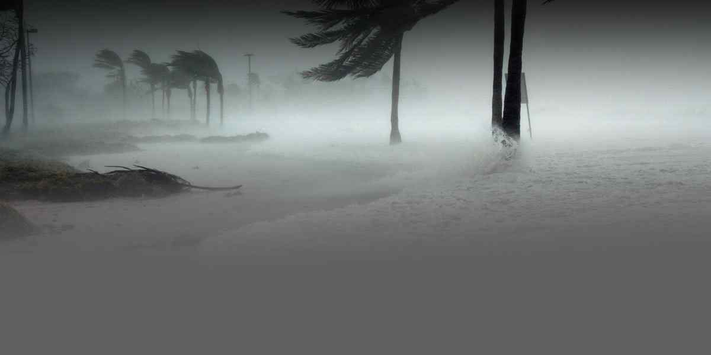

Hurricanes are massive storm systems that form over warm ocean waters and move toward land. Potential threats from hurricanes include powerful winds, heavy rainfall, storm surges, coastal and inland flooding, rip currents, tornadoes, and landslides. The Atlantic hurricane season runs from June 1 to November 30. The Pacific hurricane season runs May 15 to November 30. Hurricanes:
Can happen along any U.S. coast or in any territory in the Atlantic or Pacific oceans.
Can affect areas more than 100 miles inland.
Are most active in September.
IF YOU ARE UNDER A HURRICANE WARNING, FIND SAFE SHELTER RIGHT AWAY
- Determine how best to protect yourself from high winds and flooding.
Evacuate if told to do so.
- Take refuge in a designated storm shelter, or an interior room for high winds.
- Listen for emergency information and alerts.
- Only use generators outdoors and away from windows.
- Turn Around, Don’t Drown! Do not walk, swim, or drive through flood waters.
Prepare NOW
- Know your area’s risk of hurricanes.
- Sign up for your community’s warning system. The Emergency Alert System (EAS) and National Oceanic and Atmospheric Administration (NOAA) Weather Radio also provide emergency alerts.
- If you are at risk for flash flooding, watch for warning signs such as heavy rain.
- Practice going to a safe shelter for high winds, such as a FEMA safe room or ICC 500 storm shelter. The next best protection is a small, interior, windowless room in a sturdy building on the lowest level that is not subject to flooding.
- Based on your location and community plans, make your own plans for evacuation or sheltering in place.
- Become familiar with your evacuation zone, the evacuation route, and shelter locations.
- Gather needed supplies for at least three days. Keep in mind each person’s specific needs, including medication. Don’t forget the needs of pets.
- Keep important documents in a safe place or create password-protected digital copies.
- Protect your property. Declutter drains and gutters. Install check valves in plumbing to prevent backups. Consider hurricane shutters. Review insurance policies.
When a hurricane is 36 hours from arriving
- Turn on your TV or radio in order to get the latest weather updates and emergency instructions.
- Restock your emergency preparedness kit. Include food and water sufficient for at least three days, medications, a flashlight, batteries, cash, and first aid supplies.
- Plan how to communicate with family members if you lose power. For example, you can call, text, email or use social media. Remember that during disasters, sending text messages is usually reliable and faster than making phone calls because phone lines are often overloaded.
- Review your evacuation zone, evacuation route and shelter locations. Plan with your family. You may have to leave quickly so plan ahead.
- Keep your car in good working condition, and keep the gas tank full; stock your vehicle with emergency supplies and a change of clothes.
- If you have NFIP flood insurance, your policy may cover up to $1000 in loss avoidance measures, like sandbags and water pumps, to protect your insured property. You should keep copies of all receipts and a record of the time spent performing the work. They should be submitted to your insurance adjuster when you file a claim to be reimbursed. Visit www.fema.gov/media-library/assets/documents/137860 to learn more.
When a hurricane is 18-36 hours from arriving
- Bookmark your city or county website for quick access to storm updates and emergency instructions.
- Bring loose, lightweight objects inside that could become projectiles in high winds (e.g., patio furniture, garbage cans); anchor objects that would be unsafe to bring inside (e.g., propane tanks); and trim or remove trees close enough to fall on the building.
- Cover all of your home’s windows. Permanent storm shutters offer the best protection for windows. A second option is to board up windows with 5/8” exterior grade or marine plywood, cut to fit and ready to install.
When a hurricane is 6-18 hours from arriving
- Turn on your TV/radio, or check your city/county website every 30 minutes in order to get the latest weather updates and emergency instructions.
- Charge your cell phone now so you will have a full battery in case you lose power.
When a hurricane is 6 hours from arriving
- If you’re not in an area that is recommended for evacuation, plan to stay at home or where you are and let friends and family know where you are.
- Close storm shutters, and stay away from windows. Flying glass from broken windows could injure you.
- Turn your refrigerator or freezer to the coldest setting and open only when necessary. If you lose power, food will last longer. Keep a thermometer in the refrigerator to be able to check the food temperature when the power is restored.
- Turn on your TV/radio, or check your city/county website every 30 minutes in order to get the latest weather updates and emergency instructions.
Survive DURING
- If told to evacuate, do so immediately. Do not drive around barricades.
- If sheltering during high winds, go to a FEMA safe room, ICC 500 storm shelter, or a small, interior, windowless room or hallway on the lowest floor that is not subject to flooding.
- If trapped in a building by flooding, go to the highest level of the building. Do not climb into a closed attic. You may become trapped by rising flood water.
- Listen for current emergency information and instructions.
- Use a generator or other gasoline-powered machinery outdoors ONLY and away from windows.
- Do not walk, swim, or drive through flood waters. Turn Around. Don’t Drown! Just six inches of fast-moving water can knock you down, and one foot of moving water can sweep your vehicle away.
- Stay off of bridges over fast-moving water.
Be Safe AFTER
- Listen to authorities for information and special instructions.
- Be careful during clean-up. Wear protective clothing and work with someone else.
- Do not touch electrical equipment if it is wet or if you are standing in water. If it is safe to do so, turn off electricity at the main breaker or fuse box to prevent electric shock.
- Avoid wading in flood water, which can contain dangerous debris. Underground or downed power lines can also electrically charge the water.
- Save phone calls for emergencies. Phone systems are often down or busy after a disaster. Use text messages or social media to communicate with family and friends.
- Document any property damage with photographs. Contact your insurance company for assistance.
Associated Content